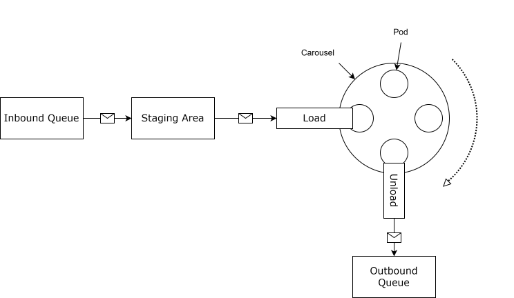

FIFO and a Galaxy Far Far Away
The SR Queue Consumer project explores a message queue consumer designed to increase throughput of message transformations in a First In First Out (FIFO) manner. Its primary benefit is low overhead to maintain message order during the processing cycle. It was inspired by the intersection of a problem I was working on and a patent for Disney’s Millennium Falcon: Smugglers Run attraction.
This document assumes some level of familiarity with queues, message transformation, and message orientated middleware concepts.
Millennium Falcon: Smugglers Run is an interactive motion simulator ride that puts a crew of 6 riders into the cockpit of the Millennium Falcon. An imaginative component of the ride is its loading and segmentation which allow for high throughput of riders (lower wait times) with an immersive loading experience. Each crew waits their turn in the chess room of the Millennium Falcon before being loaded into their individual 'cockpit' for the ride. To create the experience and the short(er) wait times there are 4 ride turntables each with 7 pods, where each pod encapsulates the ride experience for a crew.
This article has a detailed description (apologies if you hit a paywall). There is another, shorter description here. Finally, the patent is also available.
As happenstance would have it, that patent was somewhere in my mind while I was working on some throughput issues for a FIFO queue. In my case the per message transformation time was the primary bottleneck in the system.
I did not want to worry about the re-assembly and wanted faster 'per partition' processing.
Taking inspiration from the segmented turntable construct envisioned in Smugglers Run the system is able to increase throughput, maintain FIFO order, and eliminate any re-assembly when messages are complete. The analogy being each message waits its turn in the chess room, but wait times for the inbound queue are reduced by having multiple messages transformed at a time as they 'rotate' from entry to exit. They exit in the same order they arrived, but experienced the ride (transformation) separately.
TL;DR. I just want to see the code

The system contains a virtual carousel with a configurable number of pods. Pods operate on a message via a thread assigned to the pod. The system loads and unloads the pods in order. As pods are loaded and unloaded they are 'rotated' to allow the next message to start processing. The system does not have to concern itself when any of the messages on the carousel finish relative to each other. If a message finishes processing before it reaches the exit it simply waits. If a message is rotated to the exit while it is still running the carousel waits till it is completed, unloads it, and continues operation.
So hypothetically if a message takes 250 msec to process then our maximum message rate is 4 messages / sec if processed in a serial manner, however if we can process 3 'pods' at a time we increase our rate to 12 messages / sec. While we will not see the theoretical throughput based on management overhead and message timing variation we will see a significant improvement.
| Component | Description |
|---|---|
| Inbound Queue | A typical inbound queue in a Message Orientated Middleware (MOM) style application. |
| Staging Area | The staging area is a small internal queue that helps to optimize the loading and unloading operations. |
| Message Loading | Message loading monitors the staging area and the carousel state to place waiting messages from the staging area into a pod for processing. |
| Pod | A pod is a container that processes the message from inbound to outbound format on a thread. |
| Carousel | The carousel serves as an organizational construct for where messages are in their processing order. |
| Message Unloading | When a pod is 'rotated' to the exit it is unloaded. If the pod is still running it will wait for completion before advancing. |
| Outbound Queue | Messages that have completed processing are placed in the outbound queue. |
The following is a detailed description of the steps described above.
Some benefits to this design include:
A few notable limitations to the system.
For the demonstration project the message transformation is simply a string update and a Thread.Sleep() to simulate processing time. I used Windows 11, but any hardware running .NET 9.0 should work without an issue.
After logging information about the operations involved in processing the output will look something like the following (timestamps and log level omitted)
010001:000:0000169
...
010150:001:0000100
total processing time:8545.3955 msec. Accumulator 21908 msec. 2.563719841872737
where the first column is the message id, the second column is the pod that processed the message, and the third is the configured delay (message processing simulation). Total processing time is the start to finish of the execution. Accumulator is the ideal time if all the messages were processed serially with no intra processing delays.
You can experiment with different parameters found at the top of Program.cs, the defaults are:
ApplicationParameters appParams = new()
{
PodCount = 3,
MessageCount = 150,
MinProcessingDelay = 100,
MaxProcessingDelay = 200
};
| Parameter | Description |
|---|---|
| PodCount | Number of pods assigned to the Carousel |
| MessageCount | Number of Messages to process |
| MinProcessingDelay | The minimum simulation delay assigned to a message |
| MinProcessingDelay | The maximum simulation delay assigned to a message |
The envisioned system did not make its way into a production product, so many things were left as “I will get to those”. A few include:
If nothing else it was an opportunity to look at a problem with a new lens and see what comes of it.
Your mileage may vary.